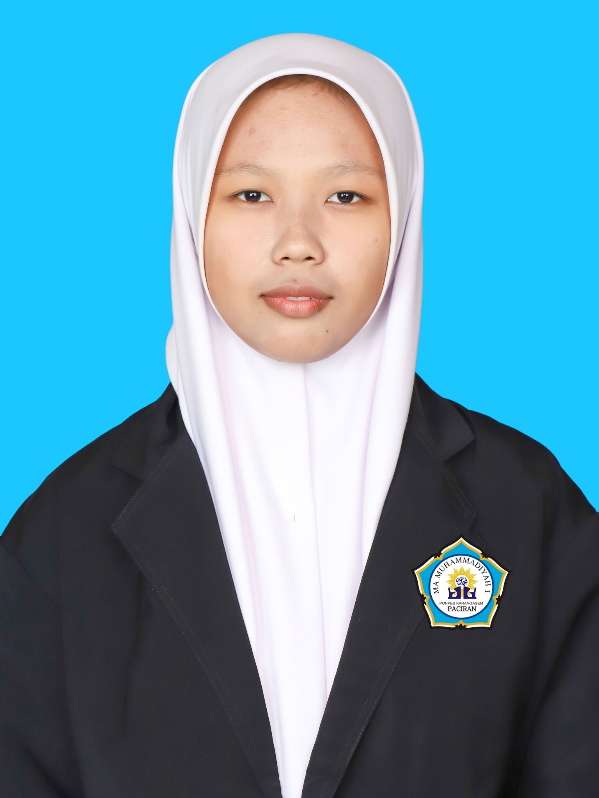

Organisasi
Saya senang mengikuti berbagai kegiatan organisasi karena dapat memberikan pengalaman baru, memperluas pertemanan, dan mengajarkan saya untuk bekerja sama dengan orang lain.
WELCOME TO MY PERSONAL WEBSITE
Halo, saya Aisyah Mardhiyah. Saat ini saya sedang menjalani perjalanan sebagai seorang pelajar dan menikmati setiap proses yang ada di dalamnya. Saya percaya bahwa setiap pengalaman, sekecil apa pun, dapat menjadi bagian penting dari perjalanan seseorang. Karena itu, saya ingin terus mencoba hal baru, menciptakan kenangan, dan menikmati setiap langkah menuju masa depan.

TENTANG SAYA
Saya berasal dari Lamongan dan saya lahir pada 5 Februari 2008. Saya adalah seseorang yang senang mancoba hal-hal baru dan menikmati waktu bersama orang-orang terdekat. Di waktu luang, saya senang mendengarkan musik, menonton film, dan melakukan berbagai kegiatan yang membuat saya merasa nyaman. Saya juga memiliki beberapa makanan dan minuman favorit yang selalu bisa membuat suasana hati menjadi lebih baik. Bagi saya, menikmati hal-hal sederhana, menghabiskan waktu bersama orang-orang yang disayangi, dan melakukan kegiatan yang menyenangkan adalah bagian dari perjalanan hidup yang patut disyukuri.
Motto: “Biarkan setiap pengalaman menjadi cerita, dan setiap langkah menjadi bagian dari perjalanan.” Prinsip: “Gagal bukan alasan untuk berhenti, tetapi kesempatan untuk memahami dan mencoba kembali.” "Keberhasilan bukanlah milik orang yang pintar. Keberhasilan adalah kepunyaan mereka yang senantiasa berusaha." B.J. Habibie
Saya tertarik pada sains, teknologi, desain, pendidikan, seni, serta berbagai kegiatan kreatif yang dapat menambah pengalaman. Saya juga senang melakukan hiling atau jalan-jalan untuk menikmati suasana baru, menemukan tempat-tempat menarik, dan mendapatkan pengalaman yang berbeda. Selain itu, saya menyukai seni karena dapat menjadi ruang untuk mengekspresikan diri dan menikmati keindahan dalam berbagai bentuk.
PENDIDIKAN
Menempuh pendidikan dasar dan mulai membangun pengalaman belajar.
Melanjutkan pendidikan sambil mengembangkan kemampuan akademik dan kegiatan sekolah.Disini saya merasa kan banyak sekali pengalaman yang menyenangkan.
Saat ini menempuh kelas ITCP dengan fokus pada bidang Ilmu Pengetahuan Alam.
KEAHLIAN
Saya senang menuangkan ide melalui desain dan mengolah berbagai elemen visual menjadi karya yang menarik dan kreatif.
Saya terus mengembangkan kemampuan berbicara di depan umum agar dapat menyampaikan ide dan informasi dengan lebih percaya diri dan mudah dipahami.
Saya senang mempelajari dan mencoba berbagai teknologi baru, terutama yang dapat digunakan untuk membuat sesuatu yang bermanfaat dan menarik.
Saya senang mengembangkan ide baru, mencoba berbagai cara untuk menghasilkan sesuatu yang menarik, dan menuangkan ide melalui desain maupun kegiatan kreatif.
PRESTASI & KEGIATAN
Saya senang mengikuti berbagai kegiatan organisasi karena dapat memberikan pengalaman baru, memperluas pertemanan, dan mengajarkan saya untuk bekerja sama dengan orang lain.
Mengikuti kegiatan atau perlombaan sebagai pengalaman untuk melatih keberanian dan kemampuan.
Terlibat dalam berbagai tugas, presentasi, dan kegiatan pembelajaran yang menambah pengalaman.
Terus mencoba hal baru untuk meningkatkan kemampuan, kreativitas, dan rasa percaya diri.
PROYEK
Membuat website personal menggunakan HTML, CSS, dan JavaScript dengan bantuan AI.
Membuat berbagai tugas, presentasi, dan portofolio untuk mengembangkan kemampuan belajar dan kreativitas.
Mempelajari proyek sederhana berbasis Arduino, sensor, dan komponen elektronika.
KONTAK
Terima kasih sudah mengunjungi website personal saya. Silakan hubungi saya melalui kontak di bawah ini.